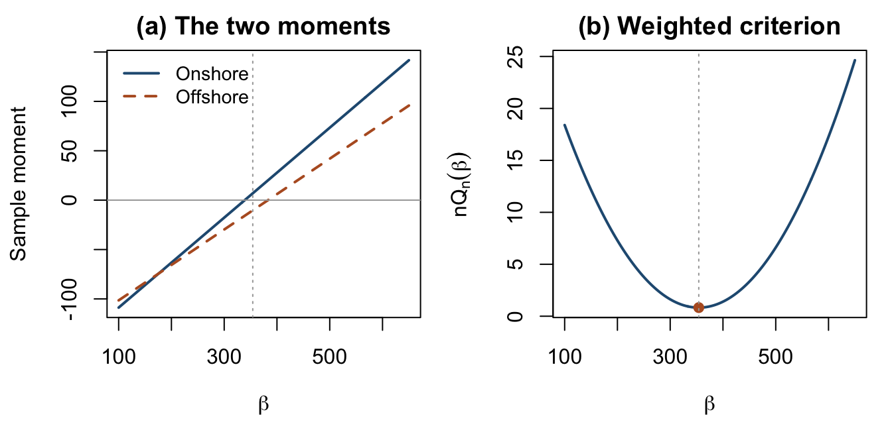
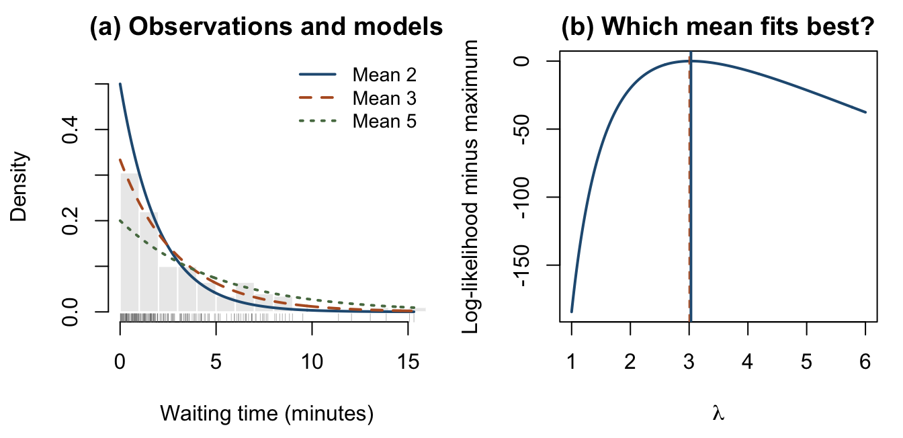
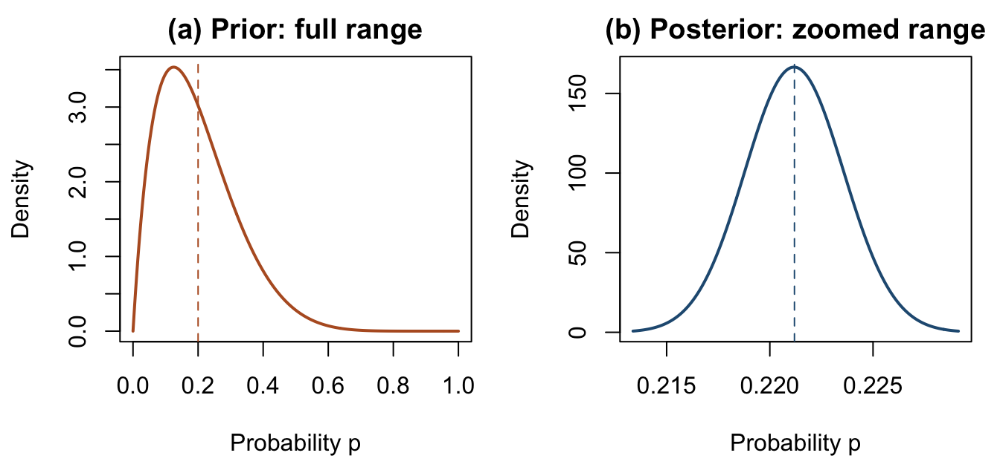
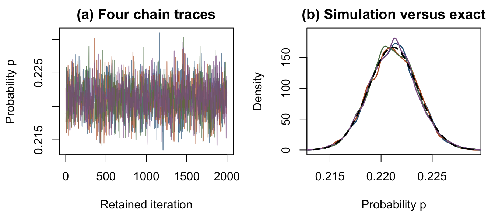

Chapter 6 Estimation methods
This chapter presents three approaches to estimating parametric models: the Generalized Method of Moments (GMM), maximum likelihood (ML), and Bayesian inference. The general context is the following: you observe a sample \(\mathbf{y}=\{y_1,\dots,y_n\}\), assume that the data have been generated by a model parameterized by \({\boldsymbol\theta} \in \mathbb{R}^K\), and seek to estimate its true value \({\boldsymbol\theta}_0\).
Prerequisites. Probability densities, expectations, matrix algebra, optimization, the central limit theorem, and statistical testing.
After working through this chapter, you should be able to:
- Construct a GMM criterion from population moment conditions.
- Explain identification, weighting, efficient GMM, and overidentification tests.
- Form a likelihood, compute a score and information matrix, and derive an MLE.
- Use likelihood-based methods for estimation and testing.
- Combine a prior distribution with a likelihood and interpret the posterior distribution.
- Explain the role of simulation in Bayesian computation.
Roadmap. The chapter develops GMM first, maximum likelihood second, and Bayesian inference third. Swiss hydropower illustrates GMM using two wind instruments. A simple waiting-time simulation introduces likelihood; recorded credit-card defaults then link numerical MLE, testing, Bayesian updating and posterior simulation. The same likelihood returns throughout, so changes in the method do not require a new dataset. Section 6.5 compares them in applications.
6.1 Generalized Method of Moments (GMM)
GMM begins with implications of the model that can be written as population moment conditions. Estimation chooses parameter values that make their sample analogues as close to zero as possible. This perspective includes many familiar estimators and does not require a complete distributional specification.
6.1.1 Definition of the GMM estimator
Let \(y_i\) be a \(p\times1\) vector of variables, \(\boldsymbol\theta\) a \(K\times1\) parameter vector, and \(h(y_i;\boldsymbol\theta)\) a continuous \(r\times1\) vector-valued function.
We denote by \(\boldsymbol\theta_0\) the true value of \(\boldsymbol\theta\) and we assume that \(\boldsymbol\theta_0\) satisfies: \[ \mathbb{E}[h(y_i;\boldsymbol\theta_0)] = \mathbf{0}. \]
We denote by \(\underline{y_i}\) the information contained in the current and past observations of \(y_i\), that is: \(\underline{y_i} = \{y_i,y_{i-1},\dots,y_1\}\). We denote by \(g(\underline{y_n};\boldsymbol\theta)\) the sample average of the \(h(y_i;\boldsymbol\theta)\) vectors, i.e.: \[ g(\underline{y_n};\boldsymbol\theta) = \frac{1}{n} \sum_{i=1}^{n} h(y_i;\boldsymbol\theta). \]
The GMM estimator chooses \(\boldsymbol\theta\) so that the sample moments are as close as possible to their population target, zero.
Definition 6.1 A GMM estimator of \(\boldsymbol\theta_0\) is given by: \[ \hat{\boldsymbol\theta}_n = \mbox{argmin}_{\boldsymbol\theta} \quad g(\underline{y_n};\boldsymbol\theta)'\, W_n \, g(\underline{y_n};\boldsymbol\theta), \] where \(W_n\) is a positive definite matrix (that may depend on \(\underline{y_n}\)).
When \(K=r\) and a solution exists in the parameter space, the sample moment equations can be solved exactly: \[ g(\underline{y_n};\hat{\boldsymbol\theta}_n) = \mathbf{0}. \] Under regularity and identification conditions, this estimator is consistent, that is \(\hat{\boldsymbol\theta}_{n}\) converges towards \(\boldsymbol\theta_0\) in probability, which we denote by: \[\begin{equation} \mbox{plim}_n\;\hat{\boldsymbol\theta}_{n}= \boldsymbol\theta_0,\quad \mbox{or} \quad\hat{\boldsymbol\theta}_{n} \overset{p}{\rightarrow} \boldsymbol\theta_0,\tag{6.1} \end{equation}\] i.e. \(\forall \varepsilon>0\), \(\lim_{n \rightarrow \infty} \mathbb{P}(\|\hat{\boldsymbol\theta}_{n} - \boldsymbol\theta_0\|>\varepsilon) = 0\) (this is Definition 9.16).
Definition 6.1 involves a positive definite matrix \(W_n\). Under the required identification and regularity conditions, any sequence of positive definite weighting matrices converging to a positive definite limit yields consistency. The GMM estimator achieves the minimum asymptotic variance when \(W_n\) converges to the inverse of matrix \(S\), defined by: \[ S = Asy.\mathbb{V}ar\left(\sqrt{n}g(\underline{y_n};\boldsymbol\theta_0)\right). \] In this case, \(W_n\) is said to be the optimal weighting matrix.
As in generalized least squares (Section 4.6.2), weighting uses the full covariance matrix, accounting for both different moment variances and correlations between moments.
If \(h(y_i;\boldsymbol\theta_0)\) is not correlated to \(h(y_j;\boldsymbol\theta_0)\), for \(i \ne j\), then we have: \[ S = \mathbb{V}ar(h(y_i;\boldsymbol\theta_0)), \] which can be approximated by \[ \hat{\Gamma}_{0,n}=\frac{1}{n}\sum_{i=1}^{n} h(y_i;\hat{\boldsymbol\theta}_n)h(y_{i};\hat{\boldsymbol\theta}_n)'. \]
In a time series context, we often have correlation between moment contributions at \(i\) and \(i+k\), especially for small \(k\)’s. In this case, and if the moment process \(\{h(y_i;\boldsymbol\theta_0)\}\) is covariance stationary with summable autocovariances (see Def. 8.4), then we have: \[ S := \sum_{\nu = -\infty}^{\infty} \Gamma_\nu, \] where \(\Gamma_\nu := \mathbb{E}[h(y_i;\boldsymbol\theta_0) h(y_{i-\nu};\boldsymbol\theta_0)']\). Matrix \(S\) is called the long-run variance of the moment process (see Def. 8.9).
For \(\nu \ge 0\), let us define \(\hat{\Gamma}_{\nu,n}\) by: \[ \hat{\Gamma}_{\nu,n} = \frac{1}{n} \sum_{i=\nu + 1}^{n} h(y_i;\hat{\boldsymbol\theta}_n)h(y_{i-\nu};\hat{\boldsymbol\theta}_n)', \] then \(S\) can be estimated using the Newey and West (1987) formula (similar to Eq. (8.6)): \[\begin{equation} \hat{\Gamma}_{0,n} + \sum_{\nu=1}^{q}\left[1-\frac{\nu}{q+1}\right](\hat{\Gamma}_{\nu,n}+\hat{\Gamma}_{\nu,n}'). \tag{6.2} \end{equation}\]
For asymptotic consistency with general serial dependence, the truncation lag grows slowly with sample size under suitable dependence conditions. A fixed lag is a practical approximation rather than a guarantee against all serial correlation.
6.1.2 Asymptotic distribution of the GMM estimator
Under identification and the moment central limit theorem, with a consistent optimal weighting matrix, we have: \[\begin{equation} \boxed{\sqrt{n}(\hat{\boldsymbol\theta}_n - \boldsymbol\theta_0) \overset{d}{\rightarrow} \mathcal{N}(0,V),}\tag{6.3} \end{equation}\] where \(V = (D'S^{-1}D)^{-1}\), with \[ D := \left.\mathbb{E}\left(\frac{\partial h(y_i;\boldsymbol\theta)}{\partial \boldsymbol\theta'}\right)\right|_{\boldsymbol\theta = \boldsymbol\theta_0}. \]
Matrix \(V\) can be approximated by \[\begin{equation} \hat{V}_n = (\hat{D}_n'\hat{S}_n^{-1}\hat{D}_n)^{-1},\tag{6.4} \end{equation}\] where \(\hat{S}_n\) is given by Eq. (6.2) and \[ \hat{D}_n := \left.\frac{\partial g(\underline{y_n};\boldsymbol\theta)}{\partial \boldsymbol\theta'}\right|_{\boldsymbol\theta = \hat{\boldsymbol\theta}_n}. \] The derivative can be evaluated analytically or numerically. These matrices describe the limiting distribution of \(\sqrt n(\widehat{\boldsymbol\theta}_n-\boldsymbol\theta_0)\); the estimated covariance of \(\widehat{\boldsymbol\theta}_n\) itself is \(\widehat V_n/n\).
For a general limiting weight \(W\), the corresponding variance is the sandwich \[ V_W=(D'WD)^{-1}D'WSWD(D'WD)^{-1}. \] It simplifies to \((D'S^{-1}D)^{-1}\) when \(W=S^{-1}\). In a two-step implementation, the sample weight is evaluated at a preliminary estimate; using the sandwich with the final moment covariance keeps that distinction explicit.
6.1.3 Testing hypotheses in the GMM framework
A first important test is the one concerning the validity of the moment restrictions (Sargan-Hansen test; Sargan (1958) and Hansen (1982)). Assume that the number of restrictions imposed is larger than the number of parameters to estimate (\(r>K\)). In this case, the restrictions are said to be overidentifying.
Under correct moment specification and a moment central limit theorem, we asymptotically have: \[ \sqrt{n}g(\underline{y_n};{\boldsymbol\theta}_0) \overset{a}{\sim} \mathcal{N}(0,S). \] As a result, it comes that: \[\begin{equation} J_n = n\,g(\underline{y_n};\hat{\boldsymbol\theta}_n)'\hat S_n^{-1}g(\underline{y_n};\hat{\boldsymbol\theta}_n) \tag{6.5} \end{equation}\] asymptotically follows a \(\chi^2\) distribution when evaluated at an optimally weighted GMM estimate. The number of degrees of freedom is equal to \(r-K\). (Note that, for \(r=K\), we have, as expected, \(J=0\).) That is, asymptotically: \[ J_n \sim \chi^2(r-K). \] The GMM framework also supports tests of parameter restrictions. Equation (6.3) leads directly to Wald tests (see Eq. (4.13) in Section 4.2.5). A criterion-difference test provides an analogue of the likelihood-ratio test in Definition 6.8. Consider an unrestricted model and a version imposing \(k\) restrictions. If both use the same moment conditions and the same weighting matrix, chosen as the estimated inverse long-run moment covariance from the unrestricted fit, then \[ n\left[Q_n(\hat{{\boldsymbol\theta}}^*_n)-Q_n(\hat{{\boldsymbol\theta}}_n)\right]\overset{d}{\rightarrow}\chi^2(k), \] where \(Q_n(\boldsymbol\theta)=g(\underline{y_n};\boldsymbol\theta)'W_n g(\underline{y_n};\boldsymbol\theta)\) and \(\hat{{\boldsymbol\theta}}^*_n\) is the constrained estimate of \({\boldsymbol\theta}_0\).
6.1.4 Application: wind, prices and Swiss hydropower
Example 6.1 (Two moment conditions for one price response) Return to the Swiss reservoir-production question in Example 4.10. We observe daily generation, the Swiss wholesale price and German wind generation in AEC::CHhydro (Appendix 10.7). The economic mechanism is the same: more German wind can lower the price facing Swiss generators. We now distinguish onshore and offshore wind, giving two potential instruments for one price coefficient.
As in Chapter 4, we remove month–year, weekday and Swiss temperature controls from generation, price and both instruments. Denote the resulting residual variables by \(q_t\), \(p_t\) and \(z_t=(z_{1,t},z_{2,t})'\). Generation is in MW and price in units of 10 EUR/MWh. We scale each residual wind series so its sample mean square equals one. The equation of interest and its moment conditions are \[ q_t=\beta p_t+u_t,\qquad \mathbb{E}\left[z_t(q_t-\beta p_t)\right]=\mathbf{0}. \] Thus \(K=1\) and \(r=2\). Each wind series should be unrelated to the part of generation left unexplained by price and the controls. These are exclusion assumptions, not consequences of observing a correlation between wind and price.
Code
data(CHhydro,package="AEC")
gmm_hydro <- CHhydro
gmm_hydro$month_year <- factor(format(gmm_hydro$date,"%Y-%m"))
gmm_hydro$weekday <- factor(as.POSIXlt(gmm_hydro$date,tz="UTC")$wday)
gmm_C <- model.matrix(~month_year+weekday+temperature_sio_c+
I(temperature_sio_c^2)+temperature_gut_c+I(temperature_gut_c^2),gmm_hydro)
gmm_qr <- qr(gmm_C)
gmm_y <- qr.resid(gmm_qr,gmm_hydro$reservoir_mw)
gmm_x <- qr.resid(gmm_qr,gmm_hydro$price_eur_mwh/10)
gmm_z <- qr.resid(gmm_qr,cbind(Onshore=gmm_hydro$wind_onshore_de_mw/1000,
Offshore=gmm_hydro$wind_offshore_de_mw/1000))
gmm_z <- sweep(gmm_z,2,sqrt(colMeans(gmm_z^2)),"/")
gmm_n <- length(gmm_y)
gmm_a <- colMeans(gmm_z*gmm_y)
gmm_b <- colMeans(gmm_z*gmm_x)
gmm_fit <- function(W) drop(crossprod(gmm_b,W%*%gmm_a)/
crossprod(gmm_b,W%*%gmm_b))
# Seven-lag Bartlett HAC covariance of the moment contributions.
gmm_moment_cov <- function(beta) {
H <- gmm_z*as.vector(gmm_y-beta*gmm_x)
S <- crossprod(H)/gmm_n
for(k in 1:7) {
G <- crossprod(H[(k+1):gmm_n,,drop=FALSE],
H[1:(gmm_n-k),,drop=FALSE])/gmm_n
S <- S+(1-k/8)*(G+t(G))
}
S
}
gmm_beta1 <- gmm_fit(diag(2))
gmm_S1 <- gmm_moment_cov(gmm_beta1)
gmm_W <- solve(gmm_S1)
gmm_beta2 <- gmm_fit(gmm_W)The first step minimizes the squared length of the two standardized sample moments. The second step estimates their long-run covariance at that preliminary fit and uses its inverse as the weighting matrix. This downweights noisy combinations of moments and accounts for their correlation. We use seven-lag Bartlett HAC weights because the daily moment contributions can be serially dependent.
Here the sample moments are linear in \(\beta\): \(g_n(\beta)=a-b\beta\), where \(a=n^{-1}\sum_tz_tq_t\) and \(b=n^{-1}\sum_tz_tp_t\). Minimizing their quadratic criterion gives the closed-form answer \[ \widehat\beta(W)=(b'Wb)^{-1}b'Wa. \] A numerical optimizer would give the same answer. The table contrasts this two-moment fit with using each wind instrument separately.
Code
gmm_results <- data.frame(
Estimator=c("Onshore instrument only","Offshore instrument only",
"Two moments: identity weight","Two moments: HAC weight"),
Response=c(gmm_a/gmm_b,gmm_beta1,gmm_beta2),row.names=NULL)
data_table(gmm_results,digits=1,row.names=FALSE,
col.names=c("Estimator","MW per 10 EUR/MWh"))| Estimator | MW per 10 EUR/MWh |
|---|---|
| Onshore instrument only | 338.9 |
| Offshore instrument only | 383.0 |
| Two moments: identity weight | 355.8 |
| Two moments: HAC weight | 354.2 |
Code
gmm_S2 <- gmm_moment_cov(gmm_beta2)
gmm_den <- drop(crossprod(gmm_b,gmm_W%*%gmm_b))
gmm_variance <- drop(crossprod(gmm_b,gmm_W%*%gmm_S2%*%gmm_W%*%gmm_b))/
(gmm_n*gmm_den^2)
gmm_se <- sqrt(gmm_variance)
gmm_at_fit <- gmm_a-gmm_b*gmm_beta2
gmm_J <- gmm_n*drop(crossprod(gmm_at_fit,gmm_W%*%gmm_at_fit))
gmm_p_value <- pchisq(gmm_J,df=1,lower.tail=FALSE)The two-step estimate is 354 MW per 10 EUR/MWh, with an approximate HAC standard error of 60 MW. The estimates change little when the two moments are reweighted; a more elaborate weighting matrix need not produce a substantially different coefficient.
Code
gmm_grid <- seq(100,650,length.out=300)
gmm_moments <- outer(gmm_grid,gmm_b,function(beta,b) -beta*b)+
matrix(gmm_a,length(gmm_grid),2,byrow=TRUE)
gmm_curve <- gmm_n*rowSums((gmm_moments%*%gmm_W)*gmm_moments)
gmm_par <- par(mfrow=c(1,2),mar=c(4.5,4.2,2,1))
matplot(gmm_grid,gmm_moments,type="l",lty=c(1,2),lwd=2,
col=c("#245A81","#B65C28"),xlab=expression(beta),
ylab="Sample moment",main="(a) The two moments")
abline(h=0,col="grey65");abline(v=gmm_beta2,col="grey65",lty=3)
legend("topleft",c("Onshore","Offshore"),col=c("#245A81","#B65C28"),
lty=c(1,2),lwd=2,bty="n",cex=.9)
plot(gmm_grid,gmm_curve,type="l",lwd=2,col="#245A81",
xlab=expression(beta),ylab=expression(n*Q[n](beta)),main="(b) Weighted criterion")
points(gmm_beta2,gmm_J,pch=19,col="#B65C28")
abline(v=gmm_beta2,col="grey65",lty=3)
Figure 6.1: Overidentified GMM with one price coefficient. Left: each wind moment crosses zero at its own one-instrument estimate. Right: the HAC-weighted quadratic criterion makes a compromise; its minimum equals the J statistic. The price-response axis is in MW per 10 EUR/MWh.
The overidentification statistic is \(J=\) 0.83, with one degree of freedom and a p-value of 0.36. The two restrictions are not detectably in conflict at conventional levels. This does not validate the instruments: common weather, hydrological conditions or expected future prices might invalidate both wind moments in a way that this test cannot detect. Chapter 4 examines related sensitivity checks. The interpretation remains a short-run production response for the observed period.
6.2 Maximum likelihood estimation
GMM uses selected moment implications of a model. Maximum likelihood uses the full probability model: it compares parameter values through the probability mass or density they assign to the observed sample. We begin with this intuition and then establish the estimator’s formal properties.
6.2.1 Intuition: waiting times
Suppose customer waiting times are independent exponential observations with mean \(\lambda>0\): \[ f(y;\lambda)=\frac{1}{\lambda}\exp(-y/\lambda),\qquad y\geq0. \] Here \(\lambda\) is a scale, not the exponential rate. For observed waiting times \(y_1,\ldots,y_n\), the log-likelihood is \[ \ell(\lambda)=-n\log\lambda-\frac{\sum_i y_i}{\lambda}. \] Its derivative vanishes at \(\widehat\lambda=\bar y\). This is the same sample-mean estimate obtained from the moment condition \(\mathbb E(Y-\lambda)=0\), although the exponential likelihood makes a stronger distributional assumption.
For example, the four waiting times \(1.1\), \(2.2\), \(0.7\) and \(5.0\) give \(\widehat\lambda=2.25\). Figure 6.2 repeats the calculation for 200 simulated observations with a true mean of three minutes.
Code
exp_wait <- rexp(200,rate=1/3)
exp_mean <- mean(exp_wait)
exp_n <- length(exp_wait)
exp_loglik <- function(lambda) -exp_n*log(lambda)-sum(exp_wait)/lambda
exp_par <- par(mfrow=c(1,2),mar=c(4.5,4.2,2,1))
hist(exp_wait,probability=TRUE,breaks=20,col="grey92",border="white",
xlab="Waiting time (minutes)",ylab="Density",main="(a) Observations and models",
ylim=c(0,.55),xlim=c(0,max(exp_wait)))
exp_grid <- seq(0,max(exp_wait),length.out=400)
for(j in 1:3) lines(exp_grid,dexp(exp_grid,rate=1/c(2,3,5)[j]),
col=c("#245A81","#B65C28","#577A50")[j],lwd=2,lty=j)
rug(exp_wait,col=adjustcolor("grey40",.45))
legend("topright",c("Mean 2","Mean 3","Mean 5"),
col=c("#245A81","#B65C28","#577A50"),lty=1:3,lwd=2,bty="n",cex=.9)
exp_lambda <- seq(1,6,length.out=400)
plot(exp_lambda,vapply(exp_lambda,exp_loglik,numeric(1))-exp_loglik(exp_mean),
type="l",lwd=2,col="#245A81",xlab=expression(lambda),
ylab="Log-likelihood minus maximum",main="(b) Which mean fits best?")
abline(v=exp_mean,col="#245A81",lwd=2)
abline(v=3,col="#B65C28",lty=2)
Figure 6.2: Exponential waiting times, simulated with mean three minutes. Left: the observations and three candidate densities. Right: the log-likelihood relative to its maximum; the blue line marks the sample mean and the dashed orange line the generating mean.
The estimate is 3.03 minutes. A likelihood compares parameter values for a fixed observed sample; it is not a probability distribution over \(\lambda\). With continuous observations, the probability of any exact sample is zero. A likelihood uses densities: probabilities of sufficiently small observation intervals are approximately proportional to their product.
6.2.2 Definition and properties
\(f(y;\boldsymbol\theta)\) denotes the probability density function (p.d.f.) of a random variable \(Y\) which depends on a set of parameters \(\boldsymbol\theta\). For discrete outcomes, use the probability mass function instead; sums replace integrals in the identities below. The density of \(n\) independent and identically distributed (i.i.d.) observations of \(Y\) is given by: \[ f(\mathbf{y};\boldsymbol\theta) = \prod_{i=1}^n f(y_i;\boldsymbol\theta), \] where \(\mathbf{y}\) denotes the vector of observations; \(\mathbf{y} = \{y_1,\dots,y_n\}\).
Definition 6.2 (Likelihood function) The likelihood function is: \[ \mathcal{L}: \boldsymbol\theta \rightarrow \mathcal{L}(\boldsymbol\theta;\mathbf{y})=f(\mathbf{y};\boldsymbol\theta)=f(y_1,\dots,y_n;\boldsymbol\theta). \]
We often work with \(\log \mathcal{L}\), the log-likelihood function.
Example 6.2 (Gaussian distribution) If \(y_i \sim \,i.i.d.\, \mathcal{N}(\mu,\sigma^2)\), then \[ \log \mathcal{L}(\boldsymbol\theta;\mathbf{y}) = - \frac{1}{2}\sum_{i=1}^n\left( \log \sigma^2 + \log 2\pi + \frac{(y_i-\mu)^2}{\sigma^2} \right). \]
Definition 6.3 (Score) The score \(S(y;\boldsymbol\theta)\) is given by \(\frac{\partial \log f(y;\boldsymbol\theta)}{\partial \boldsymbol\theta}\).
If \(y_i \sim \mathcal{N}(\mu,\sigma^2)\), and using \(\boldsymbol\theta=[\mu,\sigma^2]'\) (Example 6.2), then \[ \frac{\partial \log f(y;\boldsymbol\theta)}{\partial \boldsymbol\theta} = \left[\begin{array}{c} \dfrac{\partial \log f(y;\boldsymbol\theta)}{\partial \mu}\\ \dfrac{\partial \log f(y;\boldsymbol\theta)}{\partial \sigma^2} \end{array}\right] = \left[\begin{array}{c} \dfrac{y-\mu}{\sigma^2}\\ \frac{1}{2\sigma^2}\left(\frac{(y-\mu)^2}{\sigma^2}-1\right) \end{array}\right]. \]
Proposition 6.1 (Score expectation) If differentiation can be passed under the integral sign and the support of \(Y\) does not depend on \(\boldsymbol\theta\), the expectation of the score is zero.
Proof. We have: \[\begin{eqnarray*} \mathbb{E}\left(\frac{\partial \log f(Y;\boldsymbol\theta)}{\partial \boldsymbol\theta}\right) &=& \int \frac{\partial \log f(y;\boldsymbol\theta)}{\partial \boldsymbol\theta} f(y;\boldsymbol\theta) dy \\ &=& \int \frac{\partial f(y;\boldsymbol\theta)/\partial \boldsymbol\theta}{f(y;\boldsymbol\theta)} f(y;\boldsymbol\theta) dy = \frac{\partial}{\partial \boldsymbol\theta} \int f(y;\boldsymbol\theta) dy\\ &=&\partial 1 /\partial \boldsymbol\theta = 0, \end{eqnarray*}\] which gives the result.
Definition 6.4 (Fisher information matrix) The information matrix is minus the expectation of the second derivatives of the log-likelihood function: \[ \mathcal{I}_Y(\boldsymbol\theta) = - \mathbb{E} \left( \frac{\partial^2 \log f(Y;\boldsymbol\theta)}{\partial \boldsymbol\theta \partial \boldsymbol\theta'} \right). \]
Proposition 6.2 (Information equality) Under the differentiation and integrability conditions for the score and its derivative, we have \[ \mathcal{I}_Y(\boldsymbol\theta) = \mathbb{E} \left[ \left( \frac{\partial \log f(Y;\boldsymbol\theta)}{\partial \boldsymbol\theta} \right) \left( \frac{\partial \log f(Y;\boldsymbol\theta)}{\partial \boldsymbol\theta} \right)' \right] = \mathbb{V}ar[S(Y;\boldsymbol\theta)]. \]
Proof. We have \(\frac{\partial^2 \log f(Y;\boldsymbol\theta)}{\partial \boldsymbol\theta \partial \boldsymbol\theta'} = \frac{\partial^2 f(Y;\boldsymbol\theta)}{\partial \boldsymbol\theta \partial \boldsymbol\theta'}\frac{1}{f(Y;\boldsymbol\theta)} - \frac{\partial \log f(Y;\boldsymbol\theta)}{\partial \boldsymbol\theta}\frac{\partial \log f(Y;\boldsymbol\theta)}{\partial \boldsymbol\theta'}\). The expectation of the first right-hand side term is \(\partial^2 1 /(\partial \boldsymbol\theta \partial \boldsymbol\theta') = \mathbf{0}\), which gives the result.
Example 6.3 If \(y_i \sim\,i.i.d.\, \mathcal{N}(\mu,\sigma^2)\), let \(\boldsymbol\theta = [\mu,\sigma^2]'\) then \[ \frac{\partial \log f(y;\boldsymbol\theta)}{\partial \boldsymbol\theta} = \left[\frac{y-\mu}{\sigma^2} \quad \frac{1}{2\sigma^2}\left(\frac{(y-\mu)^2}{\sigma^2}-1\right) \right]', \] and \[ \mathcal{I}_Y(\boldsymbol\theta) = \mathbb{E}\left( \frac{1}{\sigma^4} \left[ \begin{array}{cc} \sigma^2&y-\mu\\ y-\mu & \frac{(y-\mu)^2}{\sigma^2}-\frac{1}{2} \end{array}\right] \right)= \left[ \begin{array}{cc} 1/\sigma^2&0\\ 0 & 1/(2\sigma^4) \end{array}\right]. \]
Proposition 6.3 (Additive property of the Information matrix) The information matrix resulting from two independent experiments is the sum of the information matrices: \[ \mathcal{I}_{X,Y}(\boldsymbol\theta) = \mathcal{I}_X(\boldsymbol\theta) + \mathcal{I}_Y(\boldsymbol\theta). \]
Proof. Directly deduced from the definition of the information matrix (Def. 6.4), using that the expectation of a product of independent variables is the product of the expectations.
Theorem 6.1 (Frechet-Darmois-Cramer-Rao bound) Consider an unbiased estimator of \(\boldsymbol\theta\) denoted by \(\hat{\boldsymbol\theta}(Y)\). The variance of the random variable \(\boldsymbol\omega'\hat{\boldsymbol\theta}\) (which is a linear combination of the components of \(\hat{\boldsymbol\theta}\)) is at least: \[ \boldsymbol\omega'\mathcal{I}_Y(\boldsymbol\theta)^{-1}\boldsymbol\omega, \] provided the information matrix is nonsingular and the usual regularity conditions hold.
Proof. Unbiasedness and differentiation under the integral imply \(\mathbb{C}ov[\hat{\boldsymbol\theta}(Y),S(Y;\boldsymbol\theta)]=\mathbf{Id}\). The matrix covariance inequality then gives \(\mathbb{V}ar(\hat{\boldsymbol\theta})\succeq\mathcal{I}_Y(\boldsymbol\theta)^{-1}\). Premultiplying and postmultiplying by \(\boldsymbol\omega'\) and \(\boldsymbol\omega\) gives the stated scalar bound.
Definition 6.5 (Identifiability) The vector of parameters \(\boldsymbol\theta\) is identifiable if two distinct parameter values cannot generate the same probability distribution. In a model described by densities, this means that for any \(\boldsymbol\theta^*\ne\boldsymbol\theta\): \[ f(\cdot;\boldsymbol\theta^*)\not\equiv f(\cdot;\boldsymbol\theta). \]
Definition 6.6 (Maximum Likelihood Estimator (MLE)) The maximum likelihood estimator (MLE) is the vector \(\boldsymbol\theta\) that maximizes the likelihood function. Formally: \[\begin{equation} \boldsymbol\theta_{MLE} = \arg \max_{\boldsymbol\theta} \mathcal{L}(\boldsymbol\theta;\mathbf{y}) = \arg \max_{\boldsymbol\theta} \log \mathcal{L}(\boldsymbol\theta;\mathbf{y}).\tag{6.6} \end{equation}\]
Definition 6.7 (Likelihood equation) At an interior differentiable maximum, the likelihood equation is: \[\begin{equation} \dfrac{\partial \log \mathcal{L}(\boldsymbol\theta;\mathbf{y})}{\partial \boldsymbol\theta} = \mathbf{0}. \end{equation}\]
Hypothesis 6.1 (Regularity assumptions) We have:
- \(\boldsymbol\theta \in \Theta\), where \(\Theta\) is compact and \(\boldsymbol\theta_0\) lies in its interior.
- \(\boldsymbol\theta_0\) is identified.
- The log-likelihood function is continuous in \(\boldsymbol\theta\).
- \(\mathbb{E}_{\boldsymbol\theta_0}(\log f(Y;\boldsymbol\theta))\) exists.
- The log-likelihood function is such that \((1/n)\log\mathcal{L}(\boldsymbol\theta;\mathbf{y})\) converges almost surely to \(\mathbb{E}_{\boldsymbol\theta_0}(\log f(Y;\boldsymbol\theta))\), uniformly in \(\boldsymbol\theta \in \Theta\).
- The log-likelihood function is twice continuously differentiable in an open neighborhood of \(\boldsymbol\theta_0\).
- The matrix \(\mathbf{I}(\boldsymbol\theta_0) = - \mathbb{E}_0 \left( \frac{\partial^2 \log \mathcal{L}(\boldsymbol\theta;\mathbf{y})}{\partial \boldsymbol\theta \partial \boldsymbol\theta'}\right)\) —the Fisher Information matrix— exists and is nonsingular.
Proposition 6.4 (Properties of MLE) Under regularity conditions (Assumptions 6.1), the MLE is:
- Consistent: \(\mbox{plim}\; \boldsymbol\theta_{MLE} = {\boldsymbol\theta}_0\) (\({\boldsymbol\theta}_0\) is the true vector of parameters).
- Asymptotically normal: \[\begin{equation} \boxed{\sqrt{n}(\boldsymbol\theta_{MLE} - \boldsymbol\theta_{0}) \overset{d}{\rightarrow} \mathcal{N}(0,\mathcal{I}_Y(\boldsymbol\theta_0)^{-1}).} \tag{6.7} \end{equation}\]
- Asymptotically efficient: under the correctly specified regular model, it attains the inverse-information asymptotic variance bound among regular estimators.
- Invariant: The MLE of \(g(\boldsymbol\theta_0)\) is \(g(\boldsymbol\theta_{MLE})\) if \(g\) is a continuous and continuously differentiable function.
Proof. See Appendix 9.5.
Since \(\mathcal{I}_Y(\boldsymbol\theta_0)=\frac{1}{n}\mathbf{I}(\boldsymbol\theta_0)\), the asymptotic covariance matrix of the MLE is \([\mathbf{I}(\boldsymbol\theta_0)]^{-1}\), that is: \[ [\mathbf{I}(\boldsymbol\theta_0)]^{-1} = \left[- \mathbb{E}_0 \left( \frac{\partial^2 \log \mathcal{L}(\boldsymbol\theta;\mathbf{y})}{\partial \boldsymbol\theta \partial \boldsymbol\theta'}\right) \right]^{-1}. \] A direct (analytical) evaluation of this expectation is often out of reach. It can however be estimated by either: \[\begin{equation} \hat{\mathbf{I}}_1^{-1} = \left( - \frac{\partial^2 \log \mathcal{L}({\boldsymbol\theta_{MLE}};\mathbf{y})}{\partial {\boldsymbol\theta} \partial {\boldsymbol\theta}'}\right)^{-1}, \tag{6.8} \end{equation}\]
\[\begin{equation} \hat{\mathbf{I}}_2^{-1} = \left( \sum_{i=1}^n \frac{\partial \log \mathcal{L}({\boldsymbol\theta_{MLE}};y_i)}{\partial {\boldsymbol\theta}} \frac{\partial \log \mathcal{L}({\boldsymbol\theta_{MLE}};y_i)}{\partial {\boldsymbol\theta'}} \right)^{-1}. \tag{6.9} \end{equation}\]
Under correct specification and the information equality, \((\hat{\mathbf{I}}_1^{-1})\hat{\mathbf{I}}_2\overset p\longrightarrow \mathbf{Id}\). The two covariance estimates need not coincide in a finite sample.
For independent observations under possible distributional misspecification, one can use a sandwich estimator of the covariance matrix.9 This covariance matrix is given by: \[\begin{equation} \hat{\mathbf{I}}_3^{-1} = \hat{\mathbf{I}}_1^{-1} \hat{\mathbf{I}}_2 \hat{\mathbf{I}}_1^{-1}.\tag{6.10} \end{equation}\]
6.2.3 MLE in practice
A practical implementation follows five steps:
- Specify a probability model and the parameter space. Independence permits a product likelihood; dependent data require an appropriate joint or conditional likelihood.
- Write the log-likelihood. Add log contributions rather than multiplying many small densities.
- Maximize it, respecting parameter constraints. When an analytical solution exists, use it as a numerical check.
- Estimate uncertainty from the information matrix, or a suitable robust covariance when the assumptions require it.
- Transform both estimates and uncertainty when reporting parameters on a different scale.
The next example carries out these steps with one probability. It also shows why an inverse Hessian must be interpreted in the parameterization used by the optimizer.
6.2.4 Application: a default-payment probability
Example 6.4 (From a default count to a likelihood) AEC::UCIcredit records one next-month default-payment indicator per client (Appendix 10.4). We begin with a single unconditional probability, leaving the use of client characteristics to the binary-response chapter. Under an independent Bernoulli working model,
\[
Y_i\sim\mathrm{Bernoulli}(p),\qquad
\ell(p)=s\log p+(n-s)\log(1-p),\quad s=\sum_iY_i.
\]
The data enter this likelihood through only two numbers: the number of clients and the number labelled as defaults. Maximization gives \(\widehat p=s/n\) and estimated standard error \(\sqrt{\widehat p(1-\widehat p)/n}\).
Code
There are 30,000 clients, including 6,636 recorded defaults. Hence \(\widehat p=\) 22.12%, with an estimated standard error of 0.24 percentage points. The probability refers to the recorded next-month outcome in this dataset. The standard error uses the independent Bernoulli sampling model.
Check numerical estimation against the analytical answer. To keep the probability inside \((0,1)\), estimate the log-odds \(\eta=\log[p/(1-p)]\). Then \(p=1/(1+e^{-\eta})\). We maximize the same likelihood numerically in this unconstrained parameter.
Code
credit_nll <- function(eta) {
# Stable evaluation of log(1+exp(eta)).
credit_n*(max(eta,0)+log1p(exp(-abs(eta))))-credit_s*eta
}
credit_fit <- optim(0,credit_nll,
gr=function(eta) credit_n*plogis(eta)-credit_s,
method="BFGS",hessian=TRUE,control=list(reltol=1e-12))
credit_eta <- unname(credit_fit$par)
credit_p_numeric <- plogis(credit_eta)
credit_eta_variance <- 1/drop(credit_fit$hessian)
stopifnot(credit_fit$convergence==0L,abs(credit_p_numeric-credit_p)<1e-7)The optimizer returns a log-odds estimate, so its inverse Hessian estimates the variance of \(\widehat\eta\), not directly that of \(\widehat p\). The Delta method transforms uncertainty along with the estimate. For a differentiable \(g\), \[\begin{equation} \mathbb{V}ar\{g(\widehat{\boldsymbol\theta})\} \approx G(\widehat{\boldsymbol\theta})\, \mathbb{V}ar(\widehat{\boldsymbol\theta})\, G(\widehat{\boldsymbol\theta})',\qquad G(\boldsymbol\theta)=\frac{\partial g(\boldsymbol\theta)}{\partial\boldsymbol\theta'}. \tag{6.11} \end{equation}\] Here \(g(\eta)=1/(1+e^{-\eta})\) and \(g'(\eta)=p(1-p)\). Thus the standard error of the estimated probability is \(\widehat p(1-\widehat p)\) times the standard error of the log-odds.
Code
credit_delta_se <- credit_p_numeric*(1-credit_p_numeric)*sqrt(credit_eta_variance)
credit_mle_table <- data.frame(
Parameter=c("Log-odds","Default probability"),
Unit=c("Log-odds","Percent / percentage points"),
Estimate=c(credit_eta,100*credit_p_numeric),
SE=c(sqrt(credit_eta_variance),100*credit_delta_se))
data_table(credit_mle_table,digits=3,row.names=FALSE)| Parameter | Unit | Estimate | SE |
|---|---|---|---|
| Log-odds | Log-odds | -1.259 | 0.014 |
| Default probability | Percent / percentage points | 22.120 | 0.240 |
The transformed numerical estimate and its standard error reproduce the analytical Bernoulli calculation. There is no second model here: the change of parameter makes numerical estimation convenient while leaving the fitted probability unchanged. We return to this same likelihood for testing and Bayesian updating.
6.2.5 Test procedures
Suppose we want to test the following parameter restrictions: \[\begin{equation} \boxed{H_0: \underbrace{h(\boldsymbol\theta)}_{r \times 1}=0.} \end{equation}\]
In the context of MLE, three tests are largely used:
- Likelihood Ratio (LR) test,
- Wald (W) test,
- Lagrange Multiplier (LM) test.
Here is the rationale behind these three tests:10
- LR: If \(h(\boldsymbol\theta)=0\), then imposing this restriction during the estimation (restricted estimator) should not result in a large decrease in the likelihood function (w.r.t the unrestricted estimation).
- Wald: If \(h(\boldsymbol\theta)=0\), then \(h(\hat{\boldsymbol\theta})\) should not be far from \(0\) (even if these restrictions are not imposed during the MLE).
- LM: If \(h(\boldsymbol\theta)=0\), then the gradient of the likelihood function should be small when evaluated at the restricted estimator.
In terms of implementation, while the LR necessitates to estimate both restricted and unrestricted models, the Wald test requires the estimation of the unrestricted model only, and the LM test requires the estimation of the restricted model only.
Under the null and regularity conditions, their pairwise differences converge to zero in probability, and all three have the same chi-squared limit. Their finite-sample values generally differ.
Proposition 6.5 (Asymptotic distribution of the Wald statistic) Under regularity conditions (Assumptions 6.1) and under \(H_0: h(\boldsymbol\theta)=0\), the Wald statistic, defined by: \[ \boxed{\xi^W = h(\hat{\boldsymbol\theta})' \widehat{\mathbb{V}ar}[h(\hat{\boldsymbol\theta})]^{-1} h(\hat{\boldsymbol\theta}),} \] where \[\begin{equation} \widehat{\mathbb{V}ar}[h(\hat{\boldsymbol\theta})] = \left(\frac{\partial h(\hat{\boldsymbol\theta})}{\partial \boldsymbol\theta'} \right) \widehat{\mathbb{V}ar}[\hat{\boldsymbol\theta}] \left(\frac{\partial h(\hat{\boldsymbol\theta})'}{\partial \boldsymbol\theta} \right),\tag{6.12} \end{equation}\] is asymptotically \(\chi^2(r)\), where the number of degrees of freedom \(r\) corresponds to the dimension of \(h(\boldsymbol\theta)\). (Note that Eq. (6.12) is the same as the one used in the Delta method, see Eq. (6.11).)
The Wald test, defined by the critical region \[ \{\xi^W \ge \chi^2_{1-\alpha}(r)\}, \] where \(\chi^2_{1-\alpha}(r)\) denotes the quantile of level \(1-\alpha\) of the \(\chi^2(r)\) distribution, has asymptotic level \(\alpha\) and is consistent.11
Proof. See Appendix 9.5.
Equation (6.12) is a Delta-method covariance estimate. Use Eq. (6.8) or Eq. (6.9) under correct specification, or the sandwich in Eq. (6.10) for a robust Wald calculation. The usual LR and LM reference distributions additionally rely on the specified likelihood model.
Proposition 6.6 (Asymptotic distribution of the LM test statistic) Under regularity conditions (Assumptions 6.1) and under \(H_0: h(\boldsymbol\theta)=0\), the LM statistic \[\begin{equation} \boxed{\xi^{LM} = \left(\left.\frac{\partial \log \mathcal{L}(\boldsymbol\theta)}{\partial \boldsymbol\theta'}\right|_{\boldsymbol\theta = \hat{\boldsymbol\theta}^0} \right) [\mathbf{I}(\hat{\boldsymbol\theta}^0)]^{-1} \left(\left.\frac{\partial \log \mathcal{L}(\boldsymbol\theta)}{\partial \boldsymbol\theta }\right|_{\boldsymbol\theta = \hat{\boldsymbol\theta}^0} \right),} \tag{6.13} \end{equation}\] (where \(\hat{\boldsymbol\theta}^0\) is the restricted MLE estimator) is asymptotically \(\chi^2(r)\).
The test defined by the critical region: \[ \{\xi^{LM} \ge \chi^2_{1-\alpha}(r)\} \] has asymptotic level \(\alpha\) and is consistent (see Defs. 3.2 and 3.3). This test is called Score or Lagrange Multiplier (LM) test.
Proof. See Appendix 9.5.
Definition 6.8 (Likelihood Ratio test statistics) The likelihood ratio associated to a restriction of the form \(H_0: h({\boldsymbol\theta})=0\) is given by: \[ LR = \frac{\mathcal{L}_R(\boldsymbol\theta;\mathbf{y})}{\mathcal{L}_U(\boldsymbol\theta;\mathbf{y})} \quad (\in [0,1]), \] where \(\mathcal{L}_R\) and \(\mathcal{L}_U\) denote the likelihood maximized under the restricted and unrestricted models, respectively. The likelihood ratio test statistic is given by \(-2\log(LR)\), that is: \[ \boxed{\xi^{LR}= 2 (\log\mathcal{L}_U(\boldsymbol\theta;\mathbf{y})-\log\mathcal{L}_R(\boldsymbol\theta;\mathbf{y})).} \]
Proposition 6.7 (Asymptotic equivalence of LR, LM, and Wald tests) Under the null hypothesis \(H_0\), we have, asymptotically: \[ \xi^{LM}-\xi^{LR}\overset p\longrightarrow0,\qquad \xi^{W}-\xi^{LR}\overset p\longrightarrow0. \]
Proof. See Appendix 9.5.
Example 6.5 (Three tests of the same probability benchmark) Suppose a forecaster had specified a default-payment probability of 20% before seeing the records. We use this illustrative benchmark to test \(H_0:p=p_0=0.20\) in the Bernoulli model of Example 6.4. There is one restriction.
All three statistics are easy to compute, but they examine different features of the same likelihood: \[ W=\frac{n(\widehat p-p_0)^2}{\widehat p(1-\widehat p)},\qquad LM=\frac{n(\widehat p-p_0)^2}{p_0(1-p_0)},\qquad LR=2\{\ell(\widehat p)-\ell(p_0)\}. \] Wald scales the distance from the benchmark using the unrestricted estimate’s variance. LM uses the score and information at the benchmark. LR measures the loss in fit from imposing it.
Code
credit_p0 <- .20
credit_loglik <- function(p) credit_s*log(p)+(credit_n-credit_s)*log1p(-p)
credit_test_statistics <- c(
Wald=credit_n*(credit_p-credit_p0)^2/(credit_p*(1-credit_p)),
LM=credit_n*(credit_p-credit_p0)^2/(credit_p0*(1-credit_p0)),
LR=2*(credit_loglik(credit_p)-credit_loglik(credit_p0)))
credit_tests <- data.frame(Test=names(credit_test_statistics),
Statistic=unname(credit_test_statistics),
p_value=pchisq(credit_test_statistics,df=1,lower.tail=FALSE),row.names=NULL)
data_table(credit_tests,digits=2,row.names=FALSE,
col.names=c("Test","Statistic","p-value"))| Test | Statistic | p-value |
|---|---|---|
| Wald | 78.27 | <0.001 |
| LM | 84.27 | <0.001 |
| LR | 82.16 | <0.001 |
All three reject the 20% benchmark under this sampling model. Their finite-sample values differ; asymptotic equivalence is a statement under the null, not an identity for every dataset or alternative. The estimated discrepancy is 2.12 percentage points. The tests assess its compatibility with the benchmark; practical relevance still depends on the question being asked.
6.3 Bayesian approach
GMM and maximum likelihood treat the parameter as fixed and evaluate estimators through repeated samples. Bayesian inference instead represents uncertainty about the parameter with a probability distribution and updates that distribution after observing the data.
6.3.1 From prior to posterior
Before observing the data, let \(\pi_0(\boldsymbol\theta)\) describe uncertainty about the parameter. The model supplies the likelihood \(\mathcal L(\boldsymbol\theta;\mathbf{y})\). Their product is the joint density of parameter and data; conditioning on the observed sample gives Bayes’ formula: \[\begin{equation} \pi(\boldsymbol\theta\mid\mathbf{y})= \frac{\mathcal L(\boldsymbol\theta;\mathbf{y})\pi_0(\boldsymbol\theta)}{m(\mathbf{y})},\qquad m(\mathbf{y})=\int\mathcal L(\boldsymbol\vartheta;\mathbf{y})\pi_0(\boldsymbol\vartheta)\,d\boldsymbol\vartheta. \tag{6.14} \end{equation}\] The denominator normalizes the density and does not depend on the candidate parameter. Hence \[\begin{equation} \pi(\boldsymbol\theta\mid\mathbf{y})\propto \mathcal L(\boldsymbol\theta;\mathbf{y})\pi_0(\boldsymbol\theta). \tag{6.15} \end{equation}\] The posterior combines information from the data with the stated prior. It is a distribution over the parameter; the likelihood alone is not. Posterior means and credible intervals summarize this conditional uncertainty. A particular sample need not reduce uncertainty about every feature of a model.
Some model–prior combinations give an exact posterior, as in the next example. More complex models often require numerical integration or simulation. In regular, correctly specified, fixed-dimensional models with a suitable prior, posterior distributions often become approximately normal around the MLE as the sample grows. This explains why Bayesian and likelihood-based intervals can be numerically similar in large samples, while retaining different interpretations.
Example 6.6 (Updating the same default probability) Return to the Bernoulli likelihood in Example 6.4. Put a Beta\((a,b)\) prior on \(p\), with density proportional to \(p^{a-1}(1-p)^{b-1}\). Multiplying prior and likelihood gives \[ \pi(p\mid\mathbf{y})\propto p^{s+a-1}(1-p)^{n-s+b-1}, \qquad p\mid\mathbf{y}\sim\mathrm{Beta}(a+s,b+n-s). \] We choose \(a=2\) and \(b=8\) for illustration. This prior has mean 20%, while allowing considerable uncertainty. It is a stated modelling choice, not extra observations from the source. The posterior mean has the transparent form \[ \mathbb E(p\mid\mathbf{y})=\frac{a+s}{a+b+n} =\frac{a+b}{a+b+n}\frac{a}{a+b} +\frac{n}{a+b+n}\widehat p. \] It is a weighted average of the prior mean and the observed default share. With 30,000 records, this particular prior has little influence on the answer.
Code
credit_prior <- c(a=2,b=8)
credit_posterior <- credit_prior+c(credit_s,credit_n-credit_s)
credit_post_mean <- credit_posterior[1]/sum(credit_posterior)
credit_post_sd <- sqrt(prod(credit_posterior)/
(sum(credit_posterior)^2*(sum(credit_posterior)+1)))
credit_post_ci <- qbeta(c(.025,.975),credit_posterior[1],credit_posterior[2])
credit_bayes_table <- data.frame(
Distribution=c("Prior","Posterior"),
Mean=100*c(credit_prior[1]/sum(credit_prior),credit_post_mean),
Lower=100*c(qbeta(.025,credit_prior[1],credit_prior[2]),credit_post_ci[1]),
Upper=100*c(qbeta(.975,credit_prior[1],credit_prior[2]),credit_post_ci[2]))
data_table(credit_bayes_table,digits=2,row.names=FALSE,
col.names=c("Distribution","Mean (%)","2.5% quantile (%)","97.5% quantile (%)"))| Distribution | Mean (%) | 2.5% quantile (%) | 97.5% quantile (%) |
|---|---|---|---|
| Prior | 20.00 | 2.81 | 48.25 |
| Posterior | 22.12 | 21.65 | 22.59 |
The posterior mean is 22.12%, with a 95% credible interval [21.65%, 22.59%]. Conditional on the model, prior and observed data, the posterior assigns probability 0.95 to that interval. A frequentist confidence interval instead describes the repeated-sampling coverage of an estimation procedure. Here their numerical similarity reflects the large sample and the limited weight of the prior.
Code
bayes_par <- par(mfrow=c(1,2),mar=c(4.5,4.2,2,1))
p_grid <- seq(0,1,length.out=400)
plot(p_grid,dbeta(p_grid,credit_prior[1],credit_prior[2]),type="l",lwd=2,
col="#B65C28",xlab="Probability p",ylab="Density",main="(a) Prior: full range")
abline(v=credit_prior[1]/sum(credit_prior),lty=2,col="#B65C28")
post_grid <- seq(qbeta(.0005,credit_posterior[1],credit_posterior[2]),
qbeta(.9995,credit_posterior[1],credit_posterior[2]),length.out=400)
plot(post_grid,dbeta(post_grid,credit_posterior[1],credit_posterior[2]),
type="l",lwd=2,col="#245A81",xlab="Probability p",ylab="Density",
main="(b) Posterior: zoomed range")
abline(v=credit_post_mean,lty=2,col="#245A81")
Figure 6.3: Prior and posterior for the default-payment probability. The horizontal and vertical scales differ: the left panel shows the broad prior over the whole probability range; the right zooms into the concentrated posterior. Dashed lines mark the respective means.
This conjugate model gives an exact posterior. It therefore also supplies a useful benchmark for checking a simulation algorithm.
6.3.2 Markov chain Monte Carlo
When the posterior cannot be integrated analytically, MCMC generates dependent draws whose long-run distribution is the posterior. We can then approximate posterior means, quantiles and other summaries from those draws.
Definition 6.9 (Markov Chain) A sequence \(\{z_i\}\) is a first-order Markov chain if \[ f(z_i\mid z_{i-1},z_{i-2},\ldots)=f(z_i\mid z_{i-1}). \]
Let \(\widetilde\pi(\boldsymbol\theta)=\mathcal L(\boldsymbol\theta;\mathbf{y})\pi_0(\boldsymbol\theta)\) be an unnormalized posterior density. The Metropolis–Hastings algorithm starts at a value with positive target density and repeats:
- Propose \(\boldsymbol\theta^*\) from \(q(\cdot\mid\boldsymbol\theta_{m-1})\).
- Compute the acceptance probability \[\begin{equation} \alpha=\min\left\{1, \frac{\widetilde\pi(\boldsymbol\theta^*)}{\widetilde\pi(\boldsymbol\theta_{m-1})} \frac{q(\boldsymbol\theta_{m-1}\mid\boldsymbol\theta^*)}{q(\boldsymbol\theta^*\mid\boldsymbol\theta_{m-1})}\right\}. \tag{6.16} \end{equation}\]
- Draw \(u\sim\mathcal U(0,1)\). Accept the proposal if \(u<\alpha\); otherwise retain the previous value.
The normalizing constant cancels. With a symmetric random-walk proposal, the proposal-density ratio cancels too; the target ratio still contains both the prior and the likelihood. A proposal that raises the posterior density is accepted, while one that lowers it may be accepted. This permits exploration rather than simply maximizing the target.
Under suitable irreducibility and ergodicity conditions, the chain approaches the posterior and averages of its draws converge to posterior expectations. Having the posterior as an invariant distribution alone does not establish convergence from every initial value. The retained draws are dependent, so their number overstates the amount of independent simulation information.
The proposal scale controls exploration. Very small steps can be accepted frequently while moving slowly; very large steps are often rejected. Compare chains started at different points, inspect their movement, and assess Monte Carlo error. A satisfactory acceptance rate by itself does not prove convergence.
6.3.3 Application: check MCMC against the exact posterior
Example 6.7 (Simulating a posterior we can also compute exactly) We deliberately keep the default-probability model from Example 6.6. This makes it possible to separate numerical simulation error from the statistical uncertainty represented by the posterior.
We propose \(p^*=p_{m-1}+0.006\varepsilon_m\), where \(\varepsilon_m\sim\mathcal N(0,1)\). The proposal is symmetric; values outside \((0,1)\) are rejected. We evaluate log densities to avoid underflow and keep the prior on \(p\) itself, without a change of parameter.
Code
credit_log_target <- function(p) {
if(!is.finite(p) || p<=0 || p>=1) return(-Inf)
credit_s*log(p)+(credit_n-credit_s)*log1p(-p)+
dbeta(p,credit_prior[1],credit_prior[2],log=TRUE)
}
credit_mh <- function(start,iterations=20000,step=.006) {
draws <- numeric(iterations)
current <- start; log_current <- credit_log_target(current); accepted <- 0L
for(i in seq_len(iterations)) {
proposal <- rnorm(1,current,step)
log_proposal <- credit_log_target(proposal)
if(log(runif(1))<min(0,log_proposal-log_current)) {
current <- proposal; log_current <- log_proposal; accepted <- accepted+1L
}
draws[i] <- current
}
list(draws=draws,acceptance=accepted/iterations)
}
credit_chains <- lapply(c(.1,.2,.4,.7),credit_mh)
credit_burn <- 2000L
credit_retained <- sapply(credit_chains,function(chain) chain$draws[-seq_len(credit_burn)])
credit_acceptance <- vapply(credit_chains,function(chain) chain$acceptance,numeric(1))
credit_mc_summary <- t(apply(credit_retained,2,function(draws) {
c(Mean=mean(draws),SD=sd(draws),Lower=unname(quantile(draws,.025)),
Upper=unname(quantile(draws,.975)))
}))
credit_mc_table <- data.frame(
Method=c("Exact posterior",paste("Chain",1:4)),
100*rbind(c(credit_post_mean,credit_post_sd,credit_post_ci),credit_mc_summary),
row.names=NULL,check.names=FALSE)
names(credit_mc_table) <- c("Method","Mean (%)","SD (pp)","2.5% quantile (%)","97.5% quantile (%)")
data_table(credit_mc_table,digits=3,row.names=FALSE)| Method | Mean (%) | SD (pp) | 2.5% quantile (%) | 97.5% quantile (%) |
|---|---|---|---|---|
| Exact posterior | 22.119 | 0.240 | 21.651 | 22.591 |
| Chain 1 | 22.121 | 0.236 | 21.659 | 22.577 |
| Chain 2 | 22.117 | 0.240 | 21.643 | 22.583 |
| Chain 3 | 22.117 | 0.238 | 21.660 | 22.599 |
| Chain 4 | 22.117 | 0.239 | 21.650 | 22.606 |
Each chain uses 20,000 iterations, discarding the first 2,000 as burn-in. The observed acceptance rates range from 42.5% to 43.0%. The chain summaries closely reproduce the exact posterior. Differences between chain means are simulation error; the posterior standard deviation describes uncertainty about \(p\). Longer runs can reduce the former without making the underlying statistical information more precise.
Code
mh_par <- par(mfrow=c(1,2),mar=c(4.5,4.2,2,1))
mh_colours <- c("#245A81","#B65C28","#577A50","#8B6093")
matplot(seq_len(2000),credit_retained[1:2000,],type="l",lty=1,
col=adjustcolor(mh_colours,.65),xlab="Retained iteration",ylab="Probability p",
main="(a) Four chain traces")
mh_densities <- lapply(seq_len(4),function(j) density(credit_retained[,j]))
plot(post_grid,dbeta(post_grid,credit_posterior[1],credit_posterior[2]),
type="l",lwd=2,lty=2,col="black",xlab="Probability p",ylab="Density",
main="(b) Simulation versus exact",ylim=c(0,190))
for(j in 1:4) lines(mh_densities[[j]],col=mh_colours[j],lwd=1.5)
lines(post_grid,dbeta(post_grid,credit_posterior[1],credit_posterior[2]),
lty=2,lwd=2,col="black")
Figure 6.4: Checking Metropolis–Hastings against a known posterior. Left: the first 2,000 retained draws in each of four chains. Right: densities from all retained draws, with the exact Beta posterior shown as a black dashed line. Simulation uncertainty and posterior uncertainty are different quantities.
Agreement with the exact posterior checks the implementation. Without an analytical benchmark, similar traces alone do not establish adequate exploration; assess convergence and Monte Carlo accuracy separately.
6.4 Chapter recap
- Section 6.1 builds estimators from population moment conditions; Definition 6.1 turns their sample analogues into a quadratic criterion.
- Example 6.1 estimates one Swiss price response from two wind moments. Weighting accounts for their covariance; a non-rejected overidentification test does not establish instrument validity.
- Definition 6.2 views the observed sample as a function of the parameter; Definitions 6.3 and 6.4 summarize its local slope and curvature.
- Definition 6.6 defines the maximum-likelihood estimator, and Proposition 6.4 states its main large-sample properties under regularity conditions.
- Section 6.2.5 compares Wald, LM, and likelihood-ratio tests; Proposition 6.7 establishes their asymptotic equivalence under the null.
- Section 6.3 updates the credit-default likelihood with a Beta prior. Examples 6.6 and 6.7 distinguish an exact posterior from the Monte Carlo error in approximating it.
6.5 Exercises
Attempt each question and explain your reasoning, including for true-or-false statements. Foundation exercises apply a result directly; Standard exercises require several steps or a short proof; Advanced exercises combine several results or require a longer derivation. Worked solutions and exercise-specific hints are reserved for teaching sessions and are not included in this student edition.
Exercise 6.1 (Maximum likelihood for an exponential distribution) Standard | Analytical
Review Section 6.2.
Exponential population: Let \(X_1,\dots,X_n\) be i.i.d. with distribution \(\mathcal{E}(\lambda)\), whose density is
\[f_X(x) = \frac{1}{\lambda} e^{-\frac{1}{\lambda}x},\]
with \(\lambda > 0\) and \(x>0\). Suppose the observed sample is \(x_1,\dots,x_n\). Denote it by \(\mathbf{x}=(x_1,\dots,x_n)'\).
Construct the likelihood function \(\mathcal{L}(\theta; \mathbf{X})\). What is \(\theta\)?
Construct the log-likelihood function \(\log \mathcal{L}(\theta; \mathbf{X})\).
What is the maximum likelihood estimator of \(\theta\)?
Compute the second derivative of the log-likelihood function \(\log \mathcal{L}(\theta; \mathbf{X})\).
Noting that \(\mathbb{E}(X) = \lambda\), compute \(\mathbf{I}(\theta_0) = n\mathcal{I}_X(\theta_0)\).
Find the asymptotic distribution of \(\theta_{MLE}\).
Exercise 6.2 (Maximum likelihood for a Poisson distribution) Standard | Analytical
Review Section 6.2.
Poisson population: Let \(X_1,\dots,X_n\) be i.i.d. Poisson random variables with parameter \(\lambda\), so that \(\mathbb{P}(X_i=x)=e^{-\lambda}\lambda^x/x!\) for \(\lambda>0\) and \(x=0,1,2,\dots\). Suppose the observed sample is \(x_1,\dots,x_n\), denoted by \(\mathbf{x}=(x_1,\dots,x_n)'\).
Answer the same questions as in the preceding exponential-distribution exercise.
Exercise 6.3 (Maximum likelihood for a normal distribution) Advanced | Analytical
Review Section 6.2.
Normal population: Let \(X_1,\dots,X_n\) be i.i.d. \(\mathcal{N}(\mu,\sigma^2)\) random variables, with density \[f_X(x) = \frac{1}{\sqrt{2\pi\sigma^2}} e^{-\frac{1}{2\sigma^2} (x - \mu)^2},\] where \(\mu \in \mathbb{R}\), \(\sigma > 0\), and \(x \in \mathbb{R}\).
Answer the same questions as in the preceding exponential-distribution exercise.
Exercise 6.4 (Maximum likelihood with GDP crises) Advanced | Application
Review Section 6.2.
We denote by \(y_t\) the GDP growth rate of year \(t\). This growth rate is given by:
\[y_t = \varepsilon_t - \gamma d_t,\]
where the variables \(d_t\) and \(\varepsilon_t\) are independent. More precisely: (i) for \(s \neq t\), \(d_t\) and \(d_s\) are independent, as well as \(\varepsilon_t\) and \(\varepsilon_s\), and (ii) for any \(t\) and \(s\), \(d_t\) and \(\varepsilon_s\) are independent. The variable \(d_t\) is a crisis indicator (with \(\gamma > 0\)).
We assume that \(d_t \sim i.i.d.\mathcal{B}(p)\), where \(\mathcal{B}(p)\) denotes a Bernoulli distribution with parameter \(p\) and \(\varepsilon_t \sim i.i.d.\mathcal{N}(\mu,\sigma^2)\).
Our estimation sample is of length \(T\). We want to estimate \(\theta = [p, \gamma, \mu, \sigma^2]'\). Crucially, we assume that the crisis variables \(d_t\) are not observed; that is, we observe \(y_t\) only.
Express the distribution of \(y_t\) conditional to \(d_t = 0\) (denoted by \(f(y_t|d_t = 0; \theta)\)) and the distribution of \(y_t\) conditional to \(d_t = 1\) (denoted by \(f(y_t|d_t = 1; \theta)\)).
Show that \(f(y_t; \theta) = p f(y_t|d_t = 1; \theta) + (1 - p) f(y_t|d_t = 0; \theta)\).
Write the log-likelihood \(\log \mathcal{L}(\mathbf{y}; \theta)\).
The log-likelihood is maximized numerically. The value of \(\theta\) for which the likelihood is maximized is \(\hat{\theta} = [0.04, 2.90, 2.50, 1.10]'\) (the values of \(y_t\) are expressed in percentage points). The inverse of the Hessian matrix of the log-likelihood, computed at \(\hat{\theta}\), is:
\[H = \left( \frac{\partial^2 \log \mathcal{L}(\hat{\theta}; \mathbf{y})}{\partial \theta \partial \theta'} \right)^{-1} = \begin{bmatrix} -0.000100 & -0.000015 & -0.000025 & -0.000020 \\ -0.000015 & -0.160002 & 0.019996 & 0.004003 \\ -0.000025 & 0.019996 & -0.042056 & -0.001505 \\ -0.000020 & 0.004003 & -0.001505 & -0.250204 \end{bmatrix}\]
Explain how to approximate the asymptotic distribution of \(\hat{\theta}\).
Compute a 95% confidence interval for \(\gamma\).
How can the asymptotic variance of \(\hat{\gamma}-\hat{\mu}\) be approximated? Test \(H_0:\gamma=\mu\) at the 5% significance level.
Exercise 6.5 (OLS and maximum likelihood) Standard | Proof
Review Section 6.2.
Consider the linear model \[y_i = \beta_1 x_{i,1} + \beta_2 x_{i,2} + \cdots + \beta_K x_{i,K} + \varepsilon_i = \mathbf{x}_i' \boldsymbol{\beta} + \varepsilon_i, \quad i = 1, \dots, n,\] and assume that Assumptions 4.1 to 4.5 of the course on linear regressions hold for this model. Let \(\mathbf{b}_{ML}\) be the maximum-likelihood estimator of \(\boldsymbol{\beta}\) and let \(\sigma^2_{ML}\) be the ML estimator of \(\sigma^2\).
Show that \(\mathbf{b}_{ML} = \mathbf{b}\), where \(\mathbf{b}\) is the OLS estimator of \(\boldsymbol{\beta}\).
Compute \(\sigma^2_{ML}\).
Show that \(\sigma^2_{ML}\) is biased.
Show that \(\sigma^2_{ML}\) is consistent.
Exercise 6.6 (Numerical comparison of OLS and ML inference) Standard | Calculation
Review Section 6.2.
Consider the Gaussian linear model of the preceding exercise, with \(K = 4\). We have a sample of size \(n = 8\). We obtain (with the usual notations):
\[(\mathbf{X}'\mathbf{X})^{-1} = \begin{pmatrix} 3 & 2 & 2 & 0 \\ 2 & 2 & 1 & 0 \\ 2 & 1 & 2 & 0 \\ 0 & 0 & 0 & 1 \end{pmatrix}, \quad \mathbf{b} = \begin{pmatrix} 1 \\ 2 \\ 7 \\ 7 \end{pmatrix}, \quad \mathbf{e}'\mathbf{e} = 8\]
Compute \(\sigma^2_{ML}\) and \(\sigma^2_{OLS}\) (\(\sigma^2_{OLS}\) is the OLS-based estimate of \(\sigma^2\), that we often denote by \(s^2\)).
Let \(F_{ML}\) and \(F_{OLS}\) be the test statistics for \(H_0: \mathbf{R}\boldsymbol{\beta} = \mathbf{q}\) when \(\sigma^2_{ML}\) and \(\sigma^2_{OLS}\) are used, respectively. Show that \(F_{OLS} = \frac{F_{ML}}{2}\).
Compute \(F_{ML}\) and \(F_{OLS}\) for the null hypothesis \(H_0: \beta_2 + \beta_3 = \beta_1 + \beta_4 = 10\). (No final calculation is needed, only write down the matrix form of the calculations that give the test statistics.)
What are the main issues associated with the use of an F-test based on a Maximum Likelihood estimation (in a small sample)?
Exercise 6.7 (Maximum-likelihood theory: true or false?) Standard | True or false
Review Section 6.2.
Consider a sample of variables \(y_i\), \(i \in \{1,\dots,n\}\), that are independently and identically distributed. The sample length \(n\) is large. The distribution of the \(y_i\)’s depends on three parameters gathered in vector \(\boldsymbol\theta=[\theta_1,\theta_2,\theta_3]'\). The likelihood function is given by \(\mathcal{L}(\boldsymbol\theta;{\bf y})\), where \({\bf y}=[y_1,\dots,y_n]'\).
We denote by \(\boldsymbol\theta_{MLE}=[\theta_{MLE,1},\theta_{MLE,2},\theta_{MLE,3}]'\) the maximum likelihood estimate of \(\boldsymbol\theta\). We obtain \(\boldsymbol\theta_{MLE} = [-2.90,0.82,0.60]'\). The opposite of the inverse of the Hessian matrix of the log-likelihood, evaluated at \(\boldsymbol\theta_{MLE}\), is: \[-\left[\frac{\partial^2\log \mathcal{L}(\boldsymbol\theta_{MLE};{\bf y})}{\partial \boldsymbol\theta \partial \boldsymbol\theta'}\right]^{-1} = \left[ \begin{array}{ccc} 1.00 & 0.30 & -0.40\\ 0.30 & 2.00 & 0.20\\ -0.40 & 0.20 & 0.25 \end{array} \right].\]
For each statement, decide whether it is true or false and justify your answer.
An estimate of \(\theta_{MLE,2}\)’s variance is 1.
An estimate of the variance of \(\theta_{MLE,1}+\theta_{MLE,2}\) is 3.
\(0\) is not included in the approximate 95% confidence interval of \(\theta_1\).
We reject the null hypothesis \(H_0:\;\theta_3=0\) at the 5% significance level.
The correlation between the estimates of \(\theta_1\) and \(\theta_3\) is negative.
Exercise 6.8 (Exactly identified and overidentified moments) Standard | Analytical
Review Section 6.1.
Let \(Y_1,\dots,Y_n\) be i.i.d. with mean \(\mu\), variance \(v>0\), and finite fourth moment. Let \(\boldsymbol\theta=(\mu,v)'\).
- Construct two moment conditions based on the mean and variance.
- Show that the exactly identified GMM estimator solves these sample moments and obtain explicit formulas for \(\hat\mu\) and \(\hat v\).
- Does the weighting matrix affect this exactly identified estimator? Explain.
- Suppose the distribution is also assumed symmetric, so that \(\mathbb{E}[(Y_i-\mu)^3]=0\). Explain why the model is now overidentified.
- How many degrees of freedom does the corresponding overidentification test have, and what does rejection mean?
Exercise 6.9 (Bayesian updating for a normal mean) Standard | Calculation
Review Section 6.2.
Conditional on \(\mu\), let \(Y_1,\dots,Y_n\) be i.i.d. \(\mathcal{N}(\mu,\sigma^2)\), where \(\sigma^2\) is known. The prior is \(\mu\sim\mathcal{N}(m_0,v_0)\).
- Show that the posterior distribution is \(\mathcal{N}(m_n,v_n)\), where \[ v_n=\left(\frac1{v_0}+\frac n{\sigma^2}\right)^{-1}, \qquad m_n=v_n\left(\frac{m_0}{v_0}+\frac{n\bar Y_n}{\sigma^2}\right). \]
- Interpret \(m_n\) as a precision-weighted average of the prior mean and sample mean.
- Compute the posterior mean and variance when \(m_0=0\), \(v_0=1\), \(\sigma^2=4\), \(n=4\), and \(\bar Y_n=3\).
- Give a central approximate 95% posterior credible interval for \(\mu\) using 1.96 as the normal critical value.
- Derive the posterior predictive distribution of a new observation \(Y_{n+1}\).
References
For more details, see, e.g., Charles Geyer’s lectures notes.↩︎
An interesting graphical presentation of the tests is proposed in Buse (1982).↩︎
See Defs. 3.2 and 3.3 for definitions of the asymptotic levels and consistency of tests.↩︎